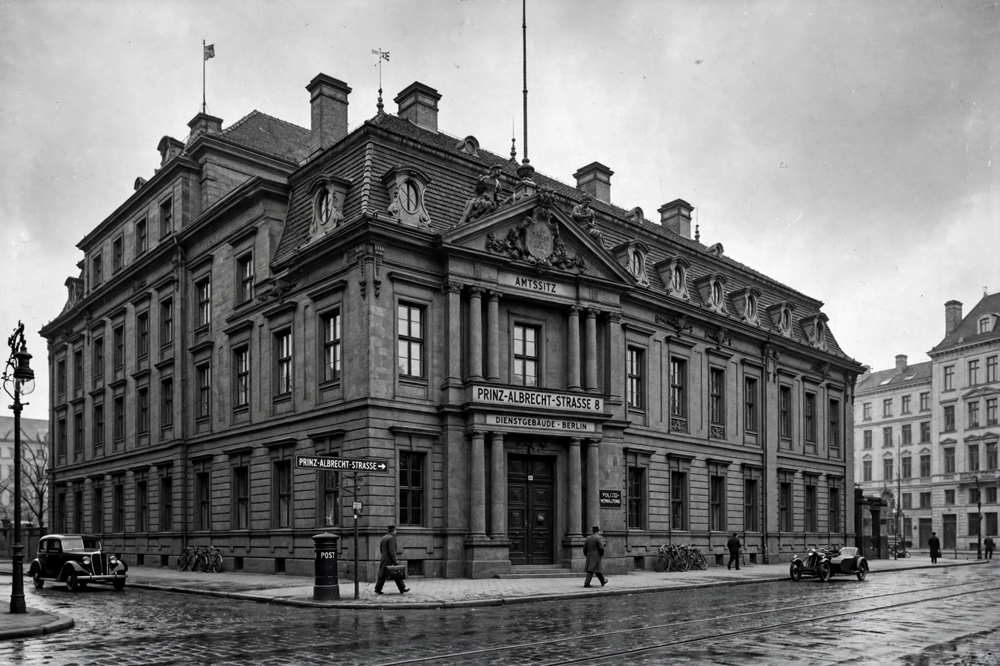

The Reich Main Security Office (German: Reichssicherheitshauptamt, RSHA) was an organisation under SS-Obergruppenführer and General of Police Reinhard Heydrich in his capacity as Chief of the Security Police (Gestapo and Kripo) and the SD. It was created by Reichsführer-SS Heinrich Himmler on 27 September 1939 through the merger of the SD with the Security Police (Sicherheitspolizei, SiPo). The RSHA became the central coordinating agency of Nazi Germany's security and intelligence apparatus and one of the principal instruments of the Holocaust.

| Formed | 27 September 1939 |
|---|---|
| Dissolved | 8 May 1945 |
| Headquarters | Prinz-Albrecht-Straße 8, Berlin |
| Chiefs | Reinhard Heydrich (1939–1942); Heinrich Himmler (acting, 1942–1943); Ernst Kaltenbrunner (1943–1945) |
| Parent agency | Schutzstaffel (SS) |
The RSHA was divided into seven departments (Ämter): Amt I (personnel), Amt II (organisation, administration and law), Amt III (the SD-Inland, domestic intelligence), Amt IV (the Gestapo, headed by Heinrich Müller), Amt V (the Kripo, criminal police, headed by Arthur Nebe), Amt VI (the SD-Ausland, foreign intelligence, headed from 1942 by Walter Schellenberg), and Amt VII (written records and ideological research). Its most notorious office was Gestapo section IV B 4, headed by Adolf Eichmann, which organised the deportation of Jews to the extermination camps.
The RSHA coordinated the activities of the Einsatzgruppen, the mobile killing units that followed the Wehrmacht into the Soviet Union and murdered over a million people. Heydrich chaired the Wannsee Conference of 20 January 1942, at which senior officials coordinated the implementation of the "Final Solution". In 1944 the RSHA also absorbed the Abwehr, the Wehrmacht's military intelligence service.
Heydrich was assassinated by Czechoslovak agents in Prague in June 1942 (Operation Anthropoid). His successor, Ernst Kaltenbrunner, was tried at Nuremberg and executed in 1946. The RSHA's headquarters on Prinz-Albrecht-Straße is now the site of the Topography of Terror documentation centre.